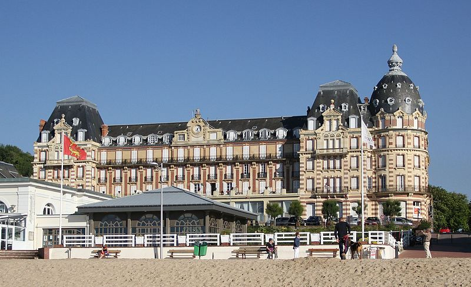
🏛️ Patrimoine
L'Ancien Grand Hôtel
Un édifice emblématique de la Belle Époque, reconnaissable à sa rotonde.
La station Belle Époque face à la mer
Présentation
Entre villas Belle Époque, plage de sable et falaises des Vaches Noires, Houlgate possède un charme unique sur la Côte Fleurie. La station invite à flâner dans ses rues, admirer son patrimoine architectural et profiter de son littoral, le temps d’une balade ou d’une journée en bord de mer.
À ne pas manquer

Un édifice emblématique de la Belle Époque, reconnaissable à sa rotonde.
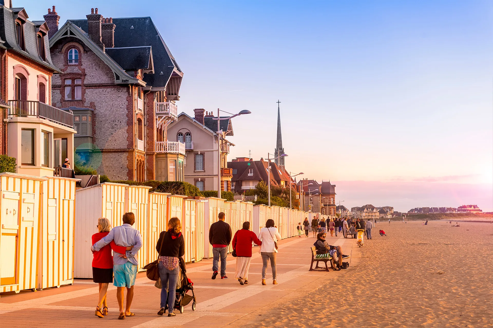
Une agréable promenade le long de la plage, bordée de cabines et de villas.
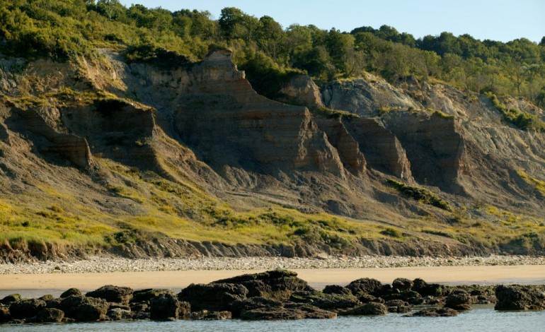
Un site naturel spectaculaire aux formations géologiques remarquables.
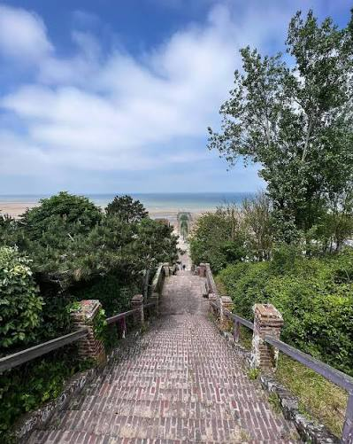
Gravissez ses marches pour profiter d’un beau point de vue sur Houlgate et la mer.
Saveurs
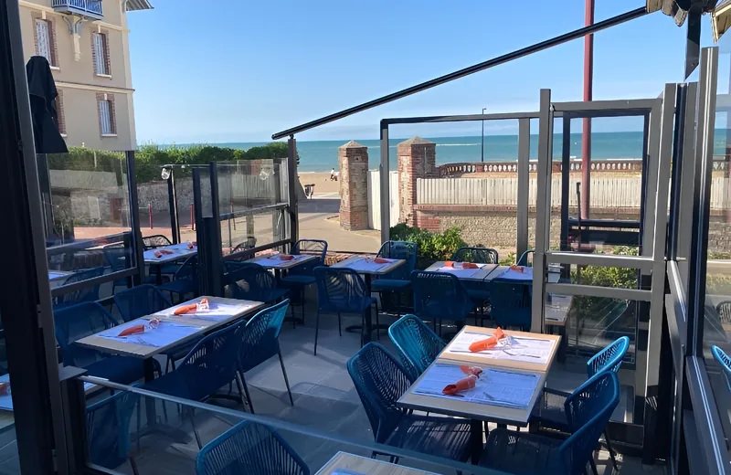
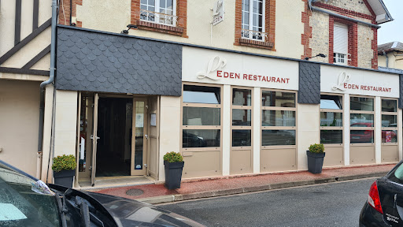
Une adresse élégante pour profiter d’une cuisine soignée.
Découvrir l'adresse →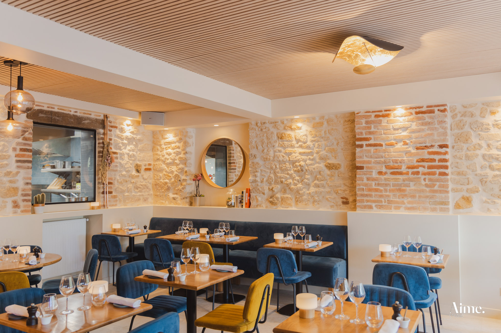
Une table chaleureuse au cœur de la rue des Bains.
Découvrir l'adresse →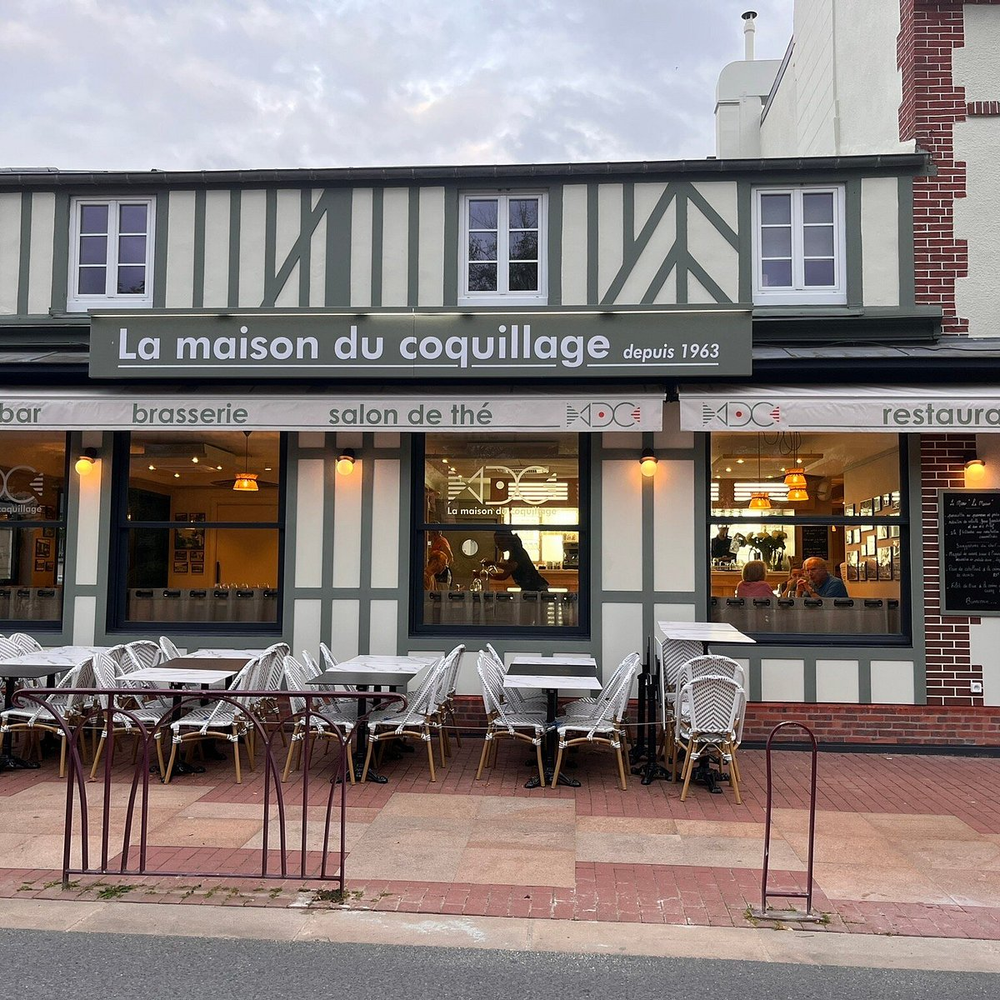
Une adresse incontournable pour les amateurs de produits de la mer.
Découvrir l'adresseÀ faire
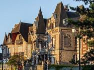
Partez à la découverte des nombreuses villas qui témoignent de l’âge d’or de la station. Houlgate possède un patrimoine architectural particulièrement riche, avec près de 500 villas remarquables.

Profitez de la longue plage de sable pour vous baigner, vous promener ou simplement admirer le coucher de soleil.
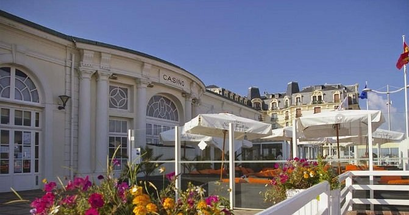
Profitez des jeux de hasard et de l'ambiance animée du casino de Houlgate.
Coups de cœur
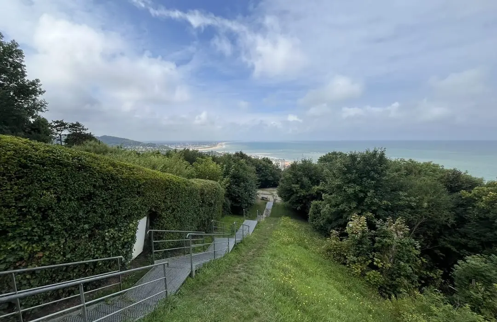
Une colline boisée qui offre un autre visage de la station, loin de l’animation du front de mer.
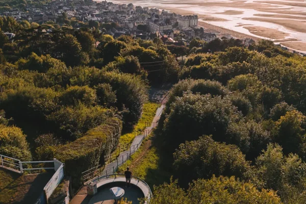
Un agréable écrin de verdure face à la mer, idéal pour une pause au cœur de Cabourg.je
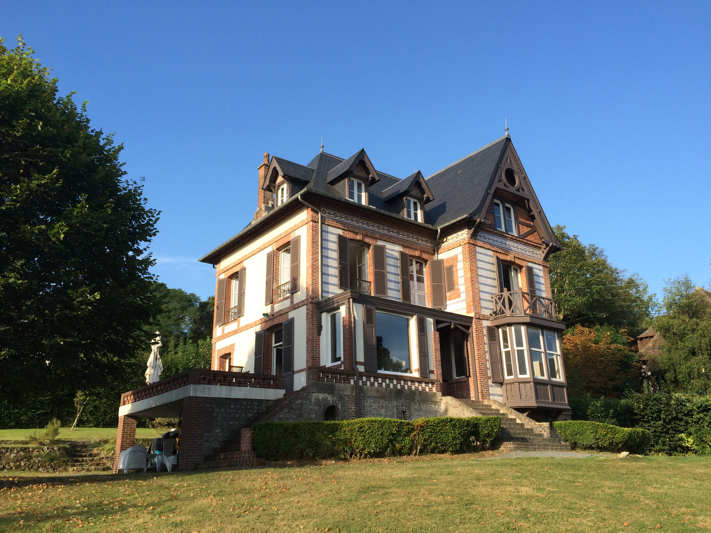
Une élégante villa balnéaire qui témoigne du charme Belle Époque de Houlgate.
Explorez Cabourg